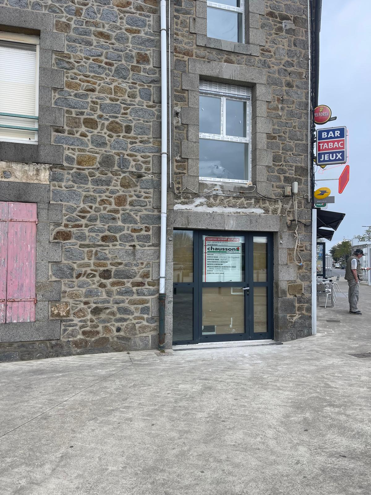
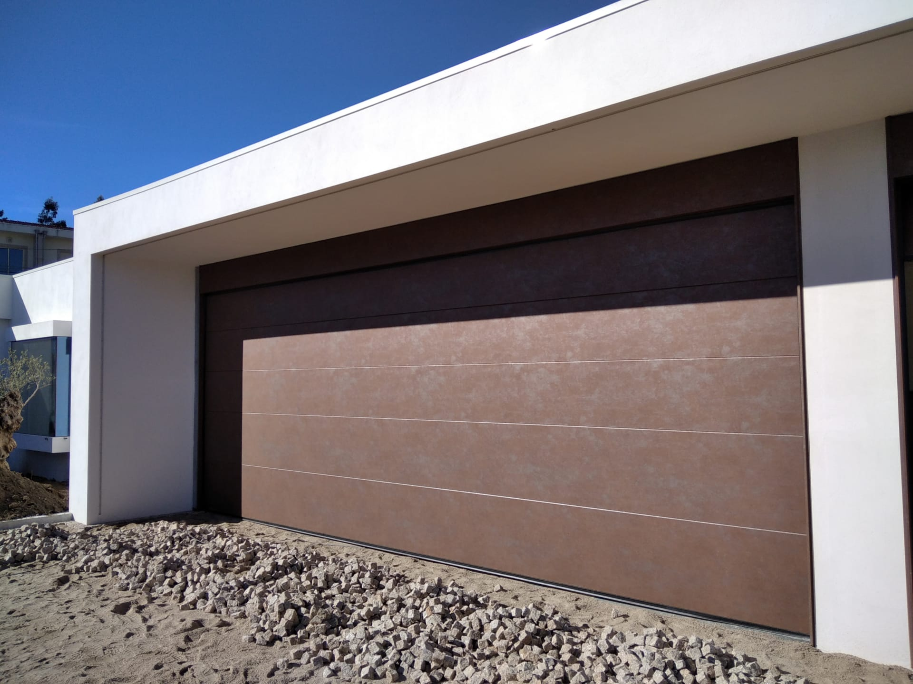
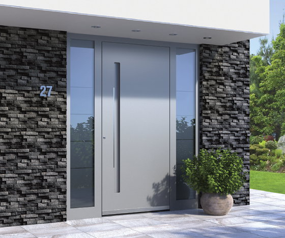

A2T Distributions intervient à Brest, Plouzané, Guipavas, Landerneau et tout le Grand Finistère. Spécialiste des menuiseries résistant aux conditions marines et aux vents de la rade de Brest.
Brest est l'une des villes les plus ventées et les plus arrosées de France. La pression du vent sur les façades brestoises est un facteur de dimensionnement que beaucoup de revendeurs ignorent. Pas nous. Nous spécifions systématiquement des produits classés A*E*V* (Air Eau Vent) adaptés à votre zone d'exposition.
La présence de la Marine nationale à Brest, les zones résidentielles de Recouvrance, Saint-Marc, Lambézellec, les maisons de Plouzané et de la presqu'île de Crozon — autant de contextes différents que nous maîtrisons. À 120 km de notre dépôt de Cléguér, nous intervenons à Brest avec un rendez-vous planifié.

À Brest, nous recommandons systématiquement des portes de garage en aluminium ou acier galvanisé avec revêtement époxy. Les embruns de la rade et le sel de déverglaçage en hiver attaquent les surfaces non traitées en moins de 3 ans. Nos gammes Hörmann et Flexidoor disposent de certifications spécifiques pour les zones côtières.

Les maisons et immeubles de Brest, reconstruits après-guerre ou récemment rénovés, ont souvent des façades qui méritent une porte d'entrée à la hauteur. La porte à pivot Tehni — acier ou aluminium laqué — apporte un design architectural fort et une résistance exceptionnelle aux bourrasques de la rade. Un investissement qui dure.

Devis gratuit, déplacement sur rendez-vous à Brest, Plouzané, Guipavas, Landerneau et presqu'île de Crozon.
Demander mon devis gratuit →